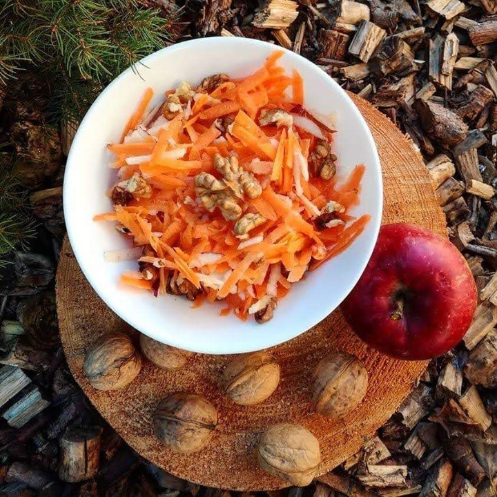

Mrkvový šalát podľa @mama_z_gruntu — Normy Jedál
V jednoduchosti je krása ...no a vlastně i chuť😋👍⠀⠀⠀⠀⠀⠀⠀⠀⠀
⠀⠀⠀⠀⠀⠀⠀⠀⠀
Toto jídlo- svačina- je tak jednoduchá a nenáročná na přípravu i množství surovin, že je hotová doslova za 5 minut a stojí asi 10 Kč. ⠀⠀⠀⠀⠀⠀⠀⠀⠀
⠀⠀⠀⠀⠀⠀⠀⠀⠀
Přesto se v ní skrývá vše, co naše tělo i mysl potřebuje.🌞⠀⠀⠀⠀⠀⠀⠀⠀⠀
⠀⠀⠀⠀⠀⠀⠀⠀⠀
Oříšky ze stromu, který máme na zahradě, mrkev🥕vypěstovaná na zahradě, jablka 🍎 z našeho stromu. Nic víc, nic míň...⠀⠀⠀⠀⠀⠀⠀⠀⠀
⠀⠀⠀⠀⠀⠀⠀⠀⠀
A přesto chuťový zážitek i teď v zimě. Při správném uskladnění vydrží jablíčka i mrkev opravdu dlouho⠀⠀⠀⠀⠀⠀⠀⠀⠀
.⠀⠀⠀⠀⠀⠀⠀⠀⠀
.⠀⠀⠀⠀⠀⠀⠀⠀⠀
.⠀⠀⠀⠀⠀⠀⠀⠀⠀
#dnesjim #dnesvarim #recept #sobestacnost #dobrouchut #zdravyzivotnistyl #mrkvovy #mrkvovysalat #salat #nasezahrada #naseuroda #pestujeme #zahradnicime #svacina #fitdoplavek #mamazgruntu